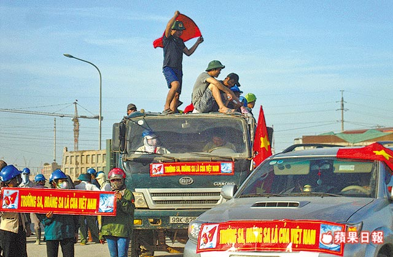
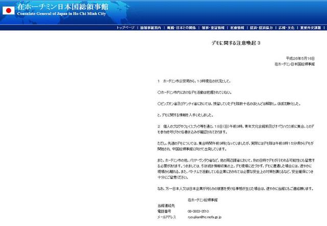
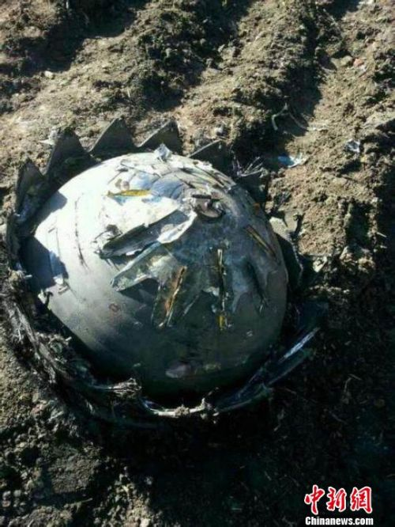
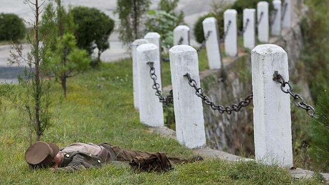

焦點評論：打台灣人 不是一場誤會
這次發生在越南平陽省大規模工人暴動，台商工廠遭受嚴重破壞，原因除了是南海主權爭議問題，歷史上的中越情仇外，新近越─中兩國政經關係發展，是個常被忽略的重要因素。
正常 越南 國際 外交
越南518反中遊行 日本也緊張
越南預計在明天發起全國性的反中大遊行，雖然該活動是從民間組織「越青」所發起的活動，但台商及多國廠商皆擔心會遭到波及和影響，其中日本政府也發出相關警示訊息。
正常 越南 國際 外交
越南明大遊行 旅遊警示調全境黃色
因應越南518遊行，行政院上午召開「越南暴動事件因應小組」第3次會議......
激戰中 越南 國際 外交黃國昌、林飛帆、陳為廷 明組「島國前進」
太陽花學運4月10日離開立法院時，喊著口號是「出關播種」，強調當時並非句點，而是個逗號，如今傳出學運三巨頭黃國昌、林飛帆和陳為廷將組成「島國前進」新團體，預計明天召開記者會。
正常 太陽花 學運 政治
不明物體墜落黑龍江 俄方否認是火箭殘骸
黑龍江齊齊哈爾官方昨晚8時確認，5個不明飛行物體先後墜入黑龍江的依安縣和拜泉縣境內。5個不明飛行物體均無有毒氣體洩漏、無有毒液體洩漏，也無爆炸危險，並未對當地居民生活造成不良影響和財產損失。
打臉 俄羅斯 國際 中國
一個國家兩個世界 北韓真實照片流出
北韓相當重視自己的國家形象，在對外流出的影片或相片中，他們總希望能給全世界一種富有與整齊一致的印象。至於到底北韓國內長什麼樣子，只有從偷拍到的畫面才能夠拼湊出來。
正常 北韓 國際 攝影